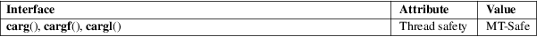

carg, cargf, cargl − calculate the complex argument
Math library (libm, −lm)
#include <complex.h>
double
carg(double complex z);
float cargf(float complex z);
long double cargl(long double complex
z);
These functions calculate the complex argument (also called phase angle) of z, with a branch cut along the negative real axis.
A complex number can be described by two real coordinates. One may use rectangular coordinates and gets
z = x + I * y
where x = creal(z) and y = cimag(z).
Or one may use polar coordinates and gets
z = r * cexp(I * a)
where r = cabs(z) is the "radius", the "modulus", the absolute value of z, and a = carg(z) is the "phase angle", the argument of z.
One has:
tan(carg(z)) = cimag(z) / creal(z)
The return value is in the range of [−pi,pi].
For an explanation of the terms used in this section, see attributes(7).

C11, POSIX.1-2008.
glibc 2.1. C99, POSIX.1-2001.
cabs(3), complex(7)